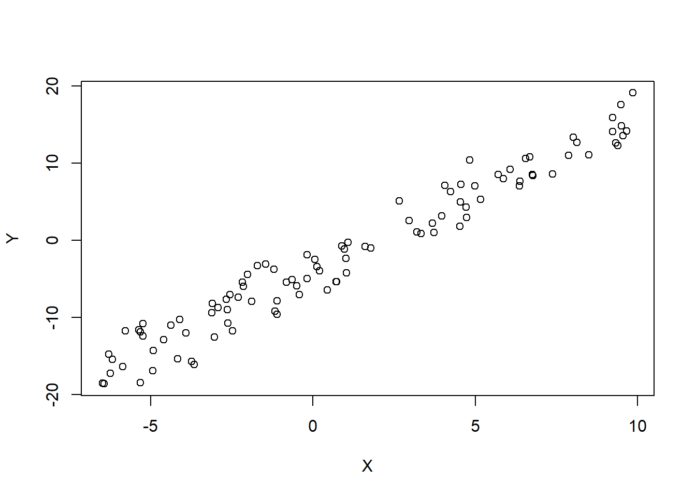
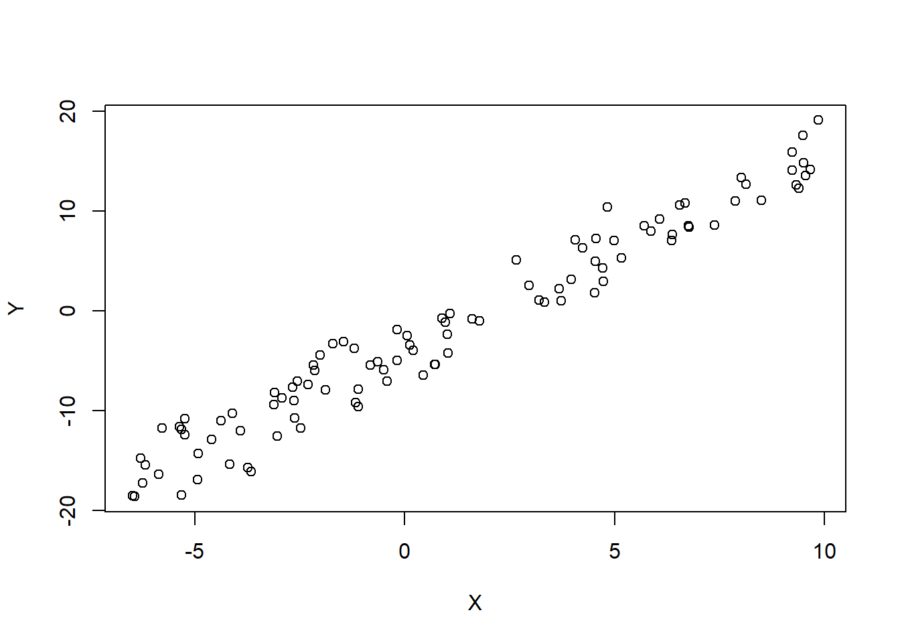

# Generate 100 observations for X uniformly from -7 to 10
X <- runif(100,-7,10)
# Generate Y as a linear function of X plus Gaussian noise
Y <- - 4 + 2 * X + rnorm(100,0,2)
# Plot the scatterplot of X and Y
plot(X,Y)
# Generate 100 observations for X uniformly from -7 to 10
X <- runif(100,-7,10)
# Generate Y as a linear function of X plus Gaussian noise
Y <- - 4 + 2 * X + rnorm(100,0,2)
# Plot the scatterplot of X and Y
plot(X,Y)
L <- lm(Y~X) # perform a linear model
plot(X,Y)
# Add the red regression line to the plot
abline(L,col="red") # Equivalent to: abline(reg = L, col = 'red')The red line in the plot above represents the fitted simple linear regression model (Y ~ X).
It shows the best linear relationship between X and Y based on the simulated data.
We generate the data using the theoretical model:
\[
Y= -4 + 2 \times X + \mathcal{N}(0, 2)
\]
Thus, we expect a slope of 2 and an intercept of -4:
print(L)
Call:
lm(formula = Y ~ X)
Coefficients:
(Intercept) X
-3.960 1.974 The estimated equation is approximately:
\[ \hat{Y} = -3.686 + 1.962 \times X \]
Because we use observed data with noise, the estimated model does not recover the exact theoretical parameters. Instead, it provides an estimation of the true underlying relationship.
“If I wanted a perfect fit, I could always use a high-degree polynomial to match the data exactly. But here’s the issue: when your model fits the data too well, you risk overfitting. It means the model captures not just the underlying trend, but also the random noise in your sample.
Don’t forget—you’re working with just 100 observations. Even if these data come from the same process, a different sample might produce a very different cloud of points. So if your model is too perfectly tailored to this specific sample, it might not perform well on another one.
That’s why you don’t want a model that fits exactly: your goal is to generalize to the entire population, not just to this particular dataset.”
The lm() function in R is used to fit linear models, including both simple and multiple regression models.
linearModel <- lm(Y~X) # Y is the response variable, X is the predictorThe ~ operator is fundamental in defining linear models in R. An expression of the form Y ~ X specifies that the response variable Y is modeled as a linear function of the predictor(s) X (also called independent variable, explanatory variable, or feature: the variable used to explain or predict the response.)
The lm() function returns an object of class “lm”, which contains all the information needed to evaluate and interpret the model, including coefficients, residuals, and diagnostics.
names(L) [1] "coefficients" "residuals" "effects" "rank"
[5] "fitted.values" "assign" "qr" "df.residual"
[9] "xlevels" "call" "terms" "model" Same as print(L) with more precise values to extract the values of the L equation:
L$coefficients (Intercept) X
-3.960255 1.974269 For each observation, we know its true value, denoted by \(Y\). When we use the regression model, we obtain a predicted value \(\hat{Y}\).
The residual is the difference between the actual value and the predicted value. It is defined as: \[
\hat{\epsilon}_i = Y_i - \hat{Y}_i
\]
Residuals measure how far off our model’s predictions are on the training data (also called the learning sample). We talk about residuals when we compare the predicted values \(\hat{Y}\) and the observed values \(Y\) for data used to fit the model.
The prediction error has the same formula as the residual, but applies to new, unseen data. In that case, we cannot compute it exactly unless we know the true value of the response variable for the new observation.
Let’s create two datasets based on the same theoretical model:
\[
Y=4+2X+N(0,2)
\]
# Set the random number generator's starting point to a fixed value
set.seed(42)
# First dataset
X1 <- runif(100, -7, 10)
Y1 <- - 4 + 2 * X1 + rnorm(100, 0, 2)
# Second dataset with the same model
X2 <- runif(100, -7, 10)
Y2 <- - 4 + 2 * X2 + rnorm(100, 0, 2)# Combine both datasets into a single data frame
df <- rbind(
data.frame(X = X1, Y = Y1, Sample = "Sample 1"),
data.frame(X = X2, Y = Y2, Sample = "Sample 2")
)mod1 <- lm(Y ~ X, data = subset(df, Sample == "Sample 1"))
mod2 <- lm(Y ~ X, data = subset(df, Sample == "Sample 2"))ggplot(data = df, aes(x = X, y = Y, color = Sample)) +
geom_point() +
geom_abline(slope = coef(mod1)["X"], intercept = coef(mod1)["(Intercept)"], colour = "red") +
geom_abline(slope = coef(mod2)["X"], intercept = coef(mod2)["(Intercept)"], colour = "darkblue") +
scale_color_manual(values = c("Sample 1" = "red", "Sample 2" = "blue")) +
labs(title = "Two samples from the same model",
x = "X", y = "Y", colour = "Sample") +
theme_minimal()The figure above shows two samples of 100 observations each, drawn from the same model. Although the data-generating process is identical, the two regression lines (red and dark blue) are not exactly the same. This is a natural consequence of sampling variability: each sample leads to slightly different estimates of the intercept and slope.
Notice how the intervals vary across \(X\). For each fixed value of \(X\), we can ask:
- “Where is the model likely to predict \(\hat{Y}\)?”
- “Where might an actual new observation \(Y\) fall?”
Understanding the difference between confidence intervals (for the mean prediction) and prediction intervals (for new data points) is essential in interpreting regression results.
When we fit a linear model, we may want to know not just the fitted values, but also how certain we are about those predictions. There are two commonly used types of intervals:
Both can be computed using the predict() function:
# Prepare sorted data for Sample 1
X_seq <- df %>%
filter(Sample == "Sample 1") %>%
select(X) %>%
arrange(X)
# Compute confidence and prediction intervals
conf <- predict(mod1, newdata = X_seq, interval = "confidence")
pred <- predict(mod1, newdata = X_seq, interval = "prediction")
# Combine everything into one data frame
df_plot <- cbind(X_seq,
fit = conf[, "fit"],
lwr_conf = conf[, "lwr"],
upr_conf = conf[, "upr"],
lwr_pred = pred[, "lwr"],
upr_pred = pred[, "upr"])
# Plot regression lines and interval bounds
ggplot() +
# Sample 1 points (mapped to color = Sample)
geom_point(data = subset(df, Sample == "Sample 1"),
aes(x = X, y = Y, color = Sample), alpha = 0.7) +
# Sample 2 points also mapped to color = Sample
geom_point(data = subset(df, Sample == "Sample 2"),
aes(x = X, y = Y, color = Sample), alpha = 0.3) +
# Regression lines
geom_abline(slope = coef(mod1)["X"], intercept = coef(mod1)["(Intercept)"], colour = "red") +
geom_abline(slope = coef(mod2)["X"], intercept = coef(mod2)["(Intercept)"], colour = "darkblue", alpha = 0.3) +
# Interval bounds
geom_line(data = df_plot, aes(x = X, y = lwr_conf), color = "brown", linetype = "dashed") +
geom_line(data = df_plot, aes(x = X, y = upr_conf), color = "brown", linetype = "dashed") +
geom_line(data = df_plot, aes(x = X, y = lwr_pred), color = "black", linetype = "dotted") +
geom_line(data = df_plot, aes(x = X, y = upr_pred), color = "black", linetype = "dotted") +
scale_color_manual(values = c("Sample 1" = "red", "Sample 2" = "darkblue")) +
labs(title = "Confidence and Prediction Intervals (Sample 1)",
x = "X", y = "Y", colour = "Sample") +
theme_minimal()print(head(df_plot)) X fit lwr_conf upr_conf lwr_pred upr_pred
1 -6.995939 -18.49928 -19.23810 -17.76046 -22.24641 -14.75215
2 -6.973301 -18.45285 -19.19025 -17.71544 -22.19970 -14.70599
3 -6.932878 -18.36993 -19.10482 -17.63504 -22.11629 -14.62357
4 -6.875320 -18.25186 -18.98317 -17.52056 -21.99752 -14.50621
5 -6.865959 -18.23266 -18.96339 -17.50194 -21.97820 -14.48712
6 -6.363672 -17.20234 -17.90207 -16.50261 -20.94196 -13.46272Let’s now interpret the two sets of interval curves shown in the plot:
The brown dashed lines represent the 95% confidence interval for the predicted mean \(\hat{Y}\) at each value of \(X\).
→ *“If I fix a value of* \(X\), this is where the average predicted \(\hat{Y}\) is likely to fall.”
The black dotted lines represent the prediction interval for a new observation \(Y\) at each value of \(X\).
→ “If I fix a value of \(X\), where might a new observed \(Y\) fall?”
Recall that our model assumes: \[ Y = a + bX + \epsilon \] where \(\epsilon\) is a random noise term accounting for variability not explained by the linear model.
But the regression line gives us: \[ \hat{Y} = \hat{a} + \hat{b}X \]
Thus: